FactoryGame 現行設計図式
2026-10-11 / コード版 f8e4dae / 原本は各MarkdownのMermaid。矢印と適用範囲は原本の説明を参照。
セルの継承と能力契約
原本と説明 · SVG単体
グリッドとセル定義
原本と説明 · SVG単体
起動の独立経路
原本と説明 · SVG単体
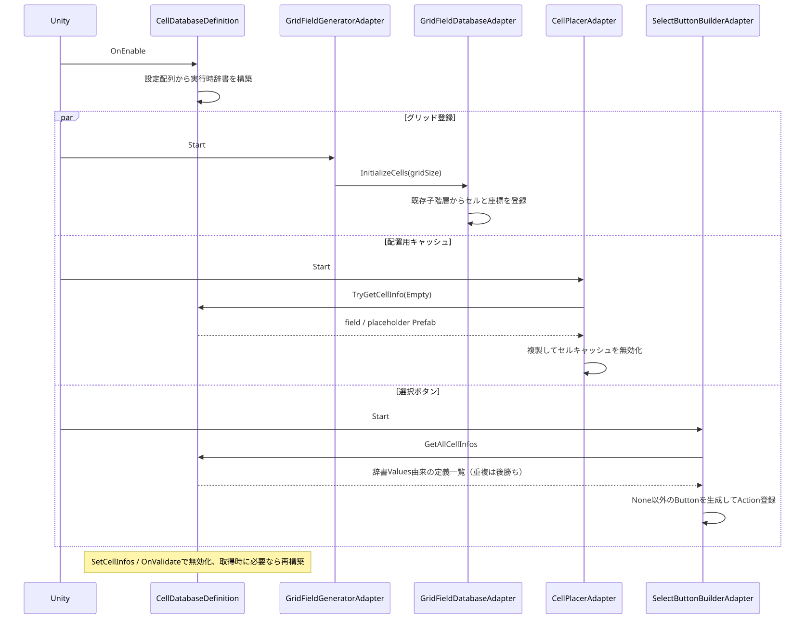
ボタン選択とドラッグ配置
原本と説明 · SVG単体
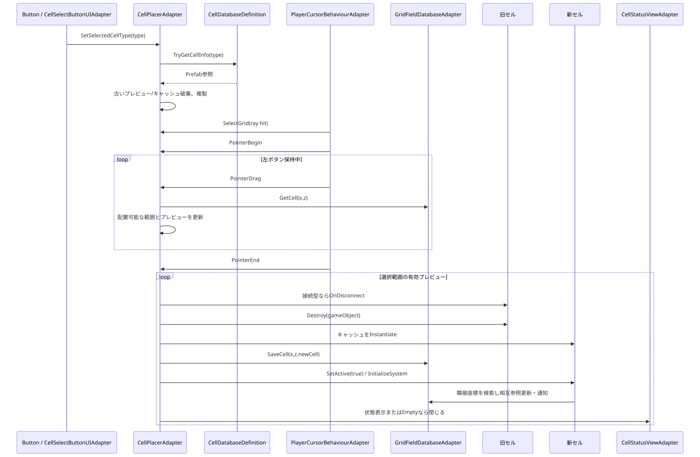
搬送の予約と確定
原本と説明 · SVG単体
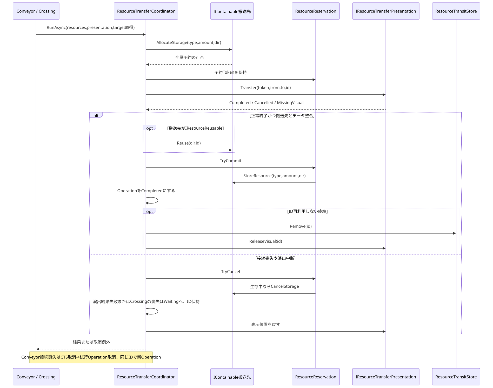
加工計画と確定
原本と説明 · SVG単体
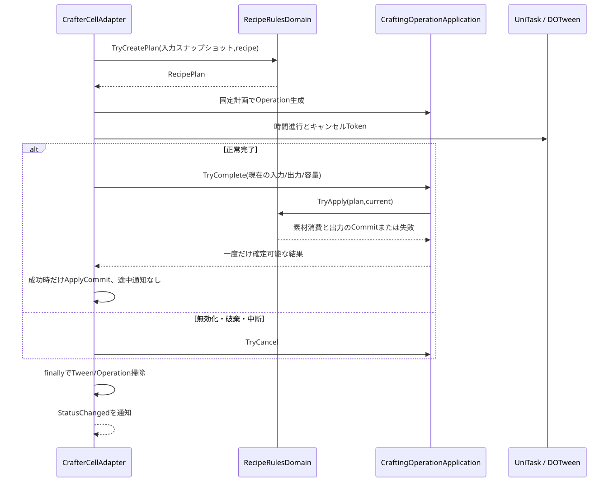
選択UIの購読寿命
原本と説明 · SVG単体
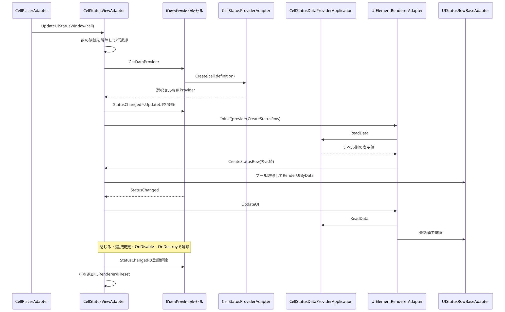
搬送クラスと所有関係
原本と説明 · SVG単体
搬送状態機械
原本と説明 · SVG単体
加工クラスと所有関係
原本と説明 · SVG単体
UIクラスと表示値
原本と説明 · SVG単体
入力・通知・データ相関
原本と説明 · SVG単体
全体構成
原本と説明 · SVG単体
Unity配線
原本と説明 · SVG単体
